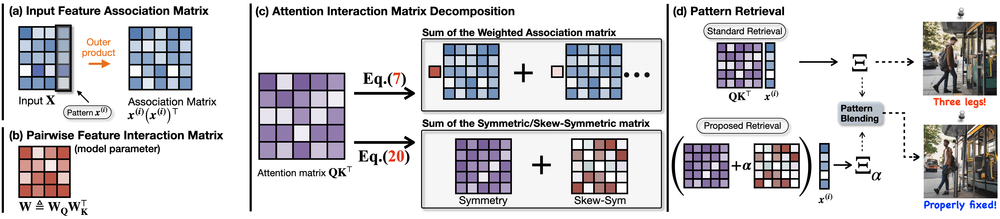
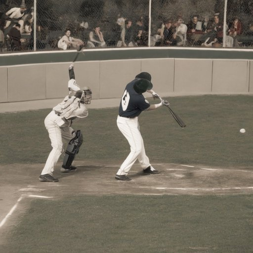
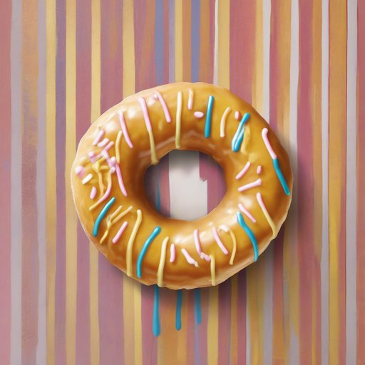
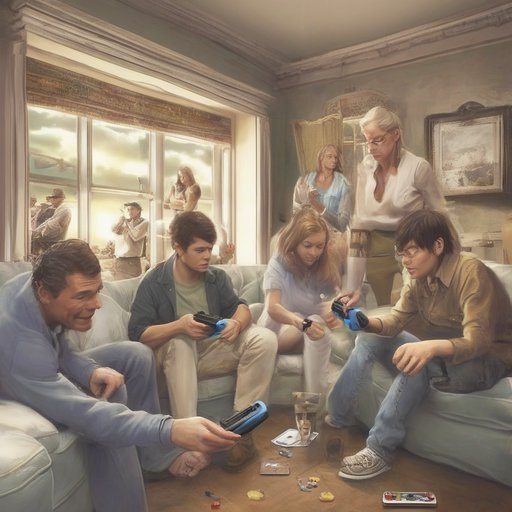
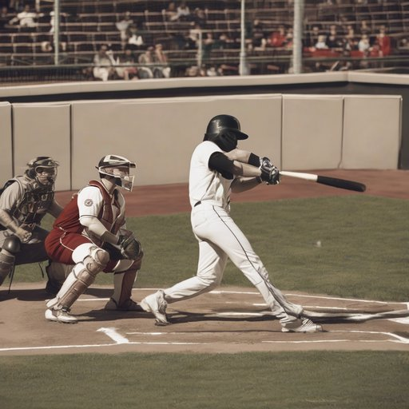
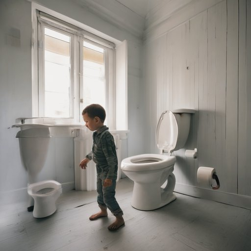
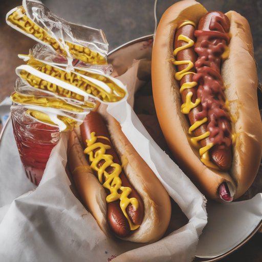
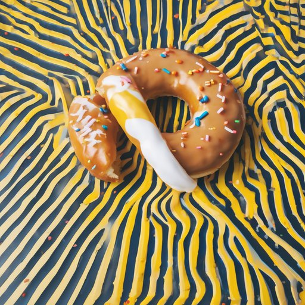
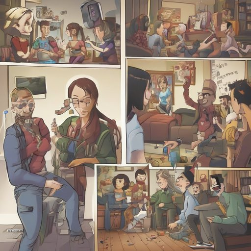

Balancing Fidelity and Diversity in Diffusion Models via Symmetric Attention Decomposition: Hopfield Perspective
We separate attention into an energy landscape and a circulation field, then use circulation as a training-free control over fidelity and diversity.
1Department of Electrical Engineering, Korea University †Corresponding author
Overview
Abstract
We characterize the pre-softmax attention matrix $\mathbf{Q}\mathbf{K}^\top$ in transformers as an associative memory matrix encoding pairwise associations between input features. By decomposing this matrix into its symmetric and skew-symmetric parts, we interpret the symmetric component as governing the structure of the energy landscape, and the skew-symmetric component as driving circulation on that landscape.
Leveraging the energy formulation induced by the symmetric component, we derive Hopfield-style stability measures that quantify the stability of retrieved features. We observe meaningful correlations between these measures and the fidelity–diversity trade-off in generation. Finally, we propose a controllable knob to modulate this trade-off by modifying the circulation of the underlying dynamics.
The metastable-mixture problem
Diffusion models often blend incompatible features—materials mixed across distinct objects, anatomically implausible structures, or attribute leakage. The same global connectivity in attention that helps compositional generation can also settle into incoherent combinations of distinct patterns.
Most prior analyses operate at a token-wise level, treating attention as retrieval and reading off a single token at a time. That view misses the interaction dynamics encoded by the attention matrix itself: how features collectively settle, and whether they settle into fixed points or cycles.
We take an associative-memory view of $\mathbf{Q}\mathbf{K}^\top$, building on the observation that transformer self-attention approximates the update rule of a modern Hopfield network. From this lens, spurious mixing is entrapment in metastable states—local energy minima where the model rests on an incoherent superposition of patterns.
Method
From energy to circulation
Associative memory view of self-attention
Treat the input features $\mathbf{X}\in\mathbb{R}^{L\times d_{\rm in}}$ as a collection of $d_{\rm in}$ feature vectors $\boldsymbol{x}^{(i)}\in\mathbb{R}^L$. The pre-softmax attention $\mathbf{Q}\mathbf{K}^\top = \mathbf{X}\mathbf{W}\mathbf{X}^\top$ then reads as a pairwise association strength between feature pairs $(i,j)$—the natural object in a Hopfield-style associative memory.

Symmetric / skew decomposition
Every pre-softmax attention matrix uniquely decomposes:
- Symmetric component $\mathbf{S}$
- Defines a Hopfield-style energy $E_{\mathbf{X}}(\xi)$ on retrieved features. Its local minima are stable attractors, including some incoherent metastable mixtures.
- Skew component $\mathbf{N}$
- Satisfies $\mathbf{u}^\top\mathbf{N}\mathbf{u}=0$, so it contributes nothing to the energy. Instead, it supplies a directional circulation field that perturbs the stable structure.
Hopfield stability measures
From the symmetric energy $E_{\mathbf{X}}(\xi)$ and the induced local field $\boldsymbol{h}_{\mathbf{X}}(\xi)$, we obtain three complementary internal diagnostics:
- Hopfield energy $E_{\mathbf{X}}$ measures global self-consistency. Lower energy indicates a more coherent retrieval.
- Instability fraction $r_{\mathbf{X}}$ measures the share of features in local conflict.
- Alignment score $\mathbf{Align}_{\mathbf{X}}$ measures directional agreement between the retrieval and its driving field.
These measures are computed purely from the model’s own attention and distinguish coherent retrievals from metastable mixtures.
Evidence
Stability tracks external quality
Spearman rank correlation $\rho$ between the three internal stability measures and standard external metrics, measured across each block of the SDXL UNet over 1K MSCOCO prompts, reveals a consistent pattern.
- Aesthetic Score positively correlates with stability at every depth.
- LPIPS Diversity inversely correlates with stability: metastable mixtures are a source of both diversity and hallucination.
- CLIPScore and ImageReward show depth-dependent behavior, with the strongest signals in the Down and Up blocks.
| Metric A / Measure B | Down · 0–47 | Mid · 48–67 | Up · 68–139 | All | ||||||||
|---|---|---|---|---|---|---|---|---|---|---|---|---|
| $-E_{\mathbf X}$ | $r_{\mathbf X}$ | $\mathbf{Align}_{\mathbf X}$ | $-E_{\mathbf X}$ | $r_{\mathbf X}$ | $\mathbf{Align}_{\mathbf X}$ | $-E_{\mathbf X}$ | $r_{\mathbf X}$ | $\mathbf{Align}_{\mathbf X}$ | $-E_{\mathbf X}$ | $r_{\mathbf X}$ | $\mathbf{Align}_{\mathbf X}$ | |
| Aesthetic Score | +0.181 | −0.162 | +0.151 | +0.207 | −0.229 | +0.204 | +0.255 | −0.255 | +0.280 | +0.265 | −0.273 | +0.296 |
| LPIPS Diversity | −0.074 | +0.192 | −0.194 | −0.336 | +0.283 | −0.250 | −0.270 | +0.237 | −0.238 | −0.279 | +0.283 | −0.297 |
| CLIPScore | +0.040 | +0.155 | −0.202 | −0.158 | +0.088 | −0.042 | −0.006 | −0.073 | +0.142 | −0.010 | +0.030 | −0.014 |
| ImageReward | +0.129 | −0.161 | +0.146 | −0.168 | +0.102 | −0.090 | −0.122 | +0.114 | −0.192 | −0.074 | +0.046 | −0.074 |
Aesthetic Score follows stability across the full network, while LPIPS diversity shows the mirror pattern. CLIPScore and ImageReward retain the same broad relationship with depth-dependent signs. The measures are therefore not only descriptive; they indicate where generated quality lives inside the model.
Intervention
Circulation as a knob
Since $\mathbf{N}$ controls circulation without altering the energy landscape, we modulate it by a scalar $\alpha$, then blend the perturbed retrieval $\Xi_\alpha$ back into the baseline $\Xi$ with a second scalar $\beta$:
No retraining and no architectural change are required. On unstable samples, the intervention breaks spurious mixtures and improves quality; on stable samples, it introduces local variation. Quantitative operating curves are available in the paper.
Results
Qualitative comparison
On unstable samples, skew perturbation breaks spurious mixtures and recovers cleaner, object-centric structure. On stable samples, it introduces local variation in texture, background, and composition—revealing the operating-point trade-off.
Unstable samples
Repairing incoherent mixtures
Stable samples
Introducing controlled variation
Baseline



Proposed





Left group: the intervention fixes extra limbs, blended objects, and fragmented compositions in unstable samples. Right group: the same intervention alters texture, background, and composition in already stable samples.
Citation
BibTeX
@inproceedings{
cho2026balancing,
title={Balancing Fidelity and Diversity in Diffusion Models via Symmetric Attention Decomposition: Hopfield Perspective},
author={Hyunmin Cho and Woo Kyoung Han and Kyong Hwan Jin},
booktitle={Forty-third International Conference on Machine Learning},
year={2026},
url={https://openreview.net/forum?id=E0MKfKmQkT}
}